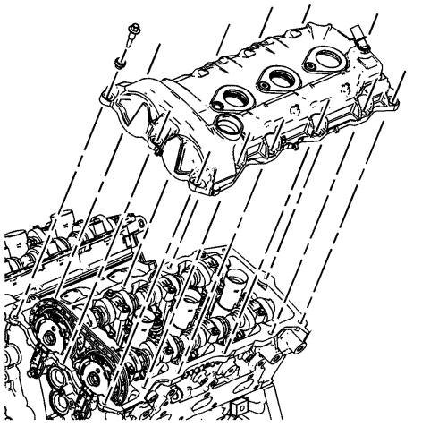
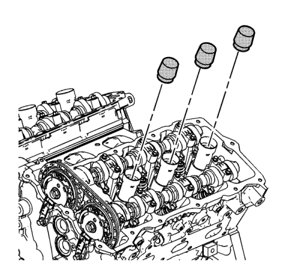
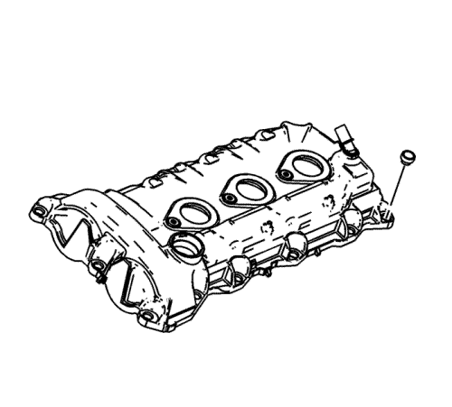
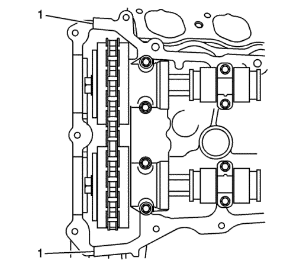
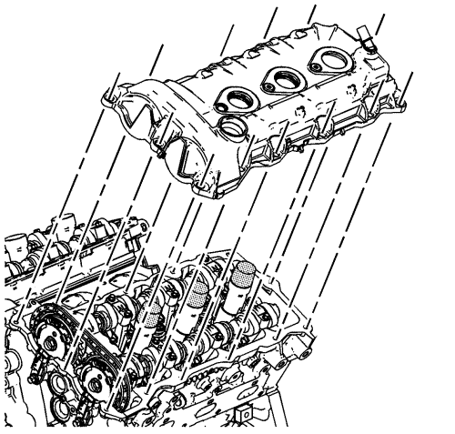
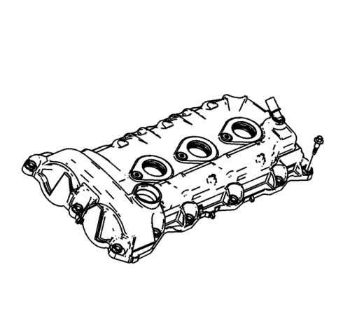
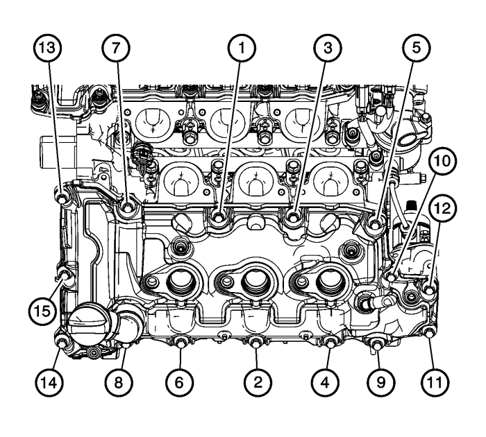
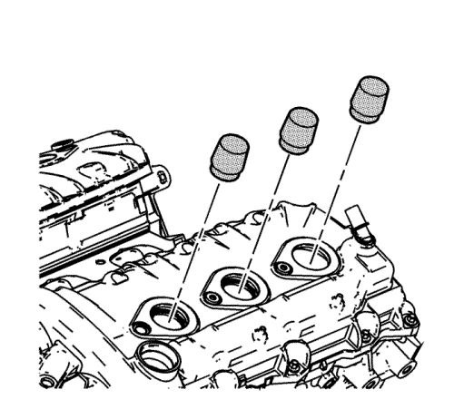

Sustitución de la tapa de los árboles de levas - Lateral izquierdo
Herramientas especiales
EN-46101 Guía para juntas de tubos de bujías
Si desea informarse sobre herramientas regionales equivalentes, consultar Herramientas especiales .
Procedimiento de desmontaje
- Retire las bobinas de encendido. Consultar Sustitución de la bobina de encendido - Banco 2 .
- Desconecte y extraiga el mazo de cables del motor de la cubierta del árbol de levas.
- Desmonte el colector de admisión. Consultar Sustitución del colector de admisión .

- Desmonte los tornillos de la tapa de los árboles de levas del lado izquierdo.
- Desmonte la tapa de los árboles de levas del lado izquierdo de la culata izquierda.
- Limpie las superficies de contacto de la culata y la tapa de los árboles de levas. Consultar Revisión y limpieza de la tapa del árbol de levas

- Monte la guía EN-46101 en los tubos de bujías de la culata izquierda.
Procedimiento de montaje

- Monte nuevos pasamuros para los tornillos de la tapa de los árboles de levas antes de montar los tornillos de la misma.

- Coloque un cordón de 8 mm (0,3150 pulg.) de diámetro por 4 mm (0,1575 pulg.) de altura de sellador RTV equivalente en las tuberías (1) separadas de la cubierta delantera del motor.

- Coloque la tapa de los árboles de levas del lado izquierdo sobre la culata izquierda.
Precaución: Consulte Precaución con las fijaciones en la sección Prólogo

- Monte los tornillos de la tapa de los árboles de levas del lado izquierdo sin apretarlos.

- Apriete los tornillos de la tapa de los árboles de levas del lado izquierdo en el orden mostrado a 10 N·m (89 lib. pulg.).
- Conecte y monte el mazo de cables del motor a la cubierta del árbol de levas.
- Monte el colector de admisión. Consultar Sustitución del colector de admisión .

- Desmonte la guía EN-46101 de los tubos de bujías de la culata izquierda.
- Monte las bobinas de encendido. Consultar Sustitución de la bobina de encendido - Banco 2 .
| © Copyright Chevrolet Europe. All rights reserved |